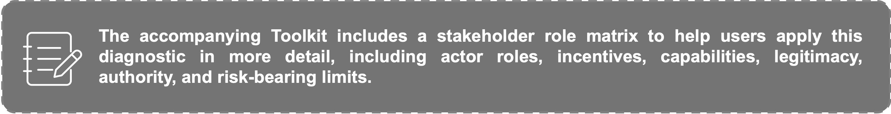
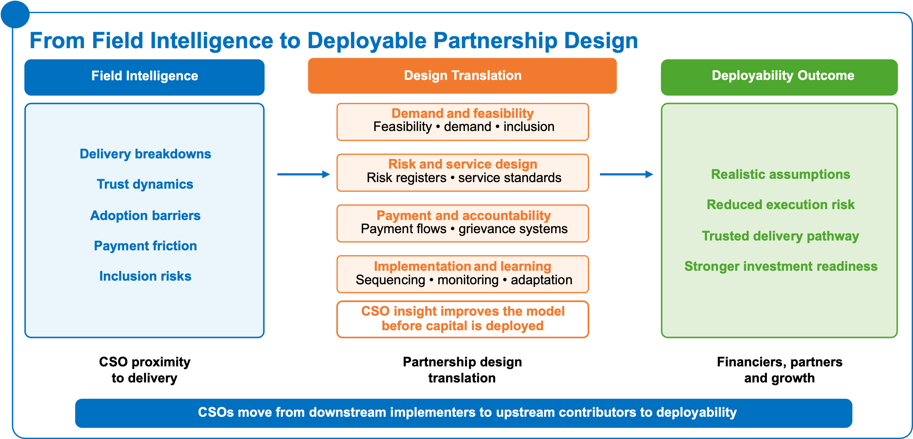
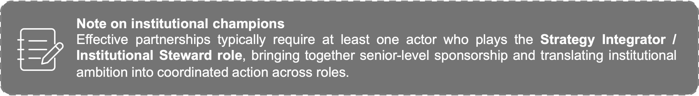
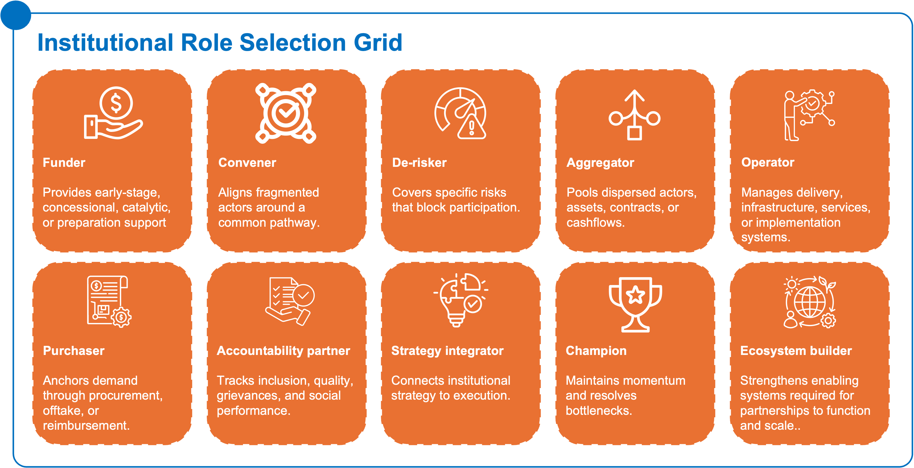
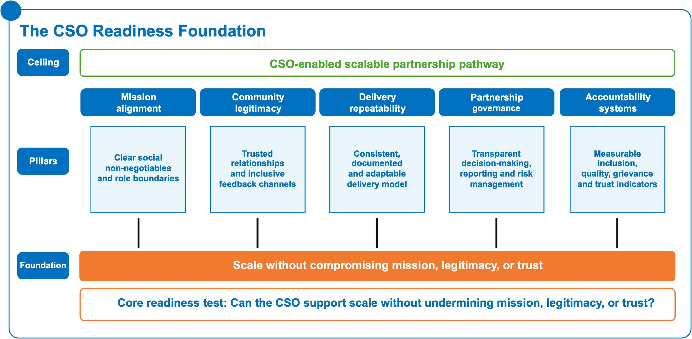

Purpose of this section
Partnerships do not become deployable only because capital is available, a project idea is strong, or a development need is visible. They become deployable when the actors around a partnership have aligned incentives, credible roles, sufficient authority, trusted relationships, and the operational capability to move from intent to execution. Across food, energy, health, and infrastructure, the recurring challenge is not the absence of actors. Governments, DFIs, donors, investors, CSOs, SMEs, intermediaries, and communities are already present in most markets. The deeper constraint is that mandate, capital, risk appetite, legitimacy, and delivery capability often sit in different places and are rarely aligned around the same operating logic.
This section provides a diagnostic lens for understanding how actor incentives, legitimacy, and political economy conditions shape whether a partnership can become investable, scalable, repeatable, and legitimate. It helps users move beyond the question of “who is involved?” toward the more practical question of “what role can each actor credibly play, under what conditions, and with what implications for deployability?”
The central message is simple: partnerships stall when roles are unclear, risks are pushed to actors unable to manage them, approval rights are fragmented, community legitimacy is assumed rather than built, and institutional ambition is not translated into executable role choices. Conversely, partnerships become more deployable when actors understand their respective mandates, incentives, constraints, sources of credibility, and accountability obligations.
5.1 Diagnostic actor map
A diagnostic actor map is a practical tool for understanding how a partnership system actually works before selecting a model, designing a capital structure, or assigning implementation responsibilities. It is not enough to identify the institutions present in a sector. The critical question is whether each actor has the mandate, authority, incentives, capacity, legitimacy, and risk-bearing ability required to support the partnership pathway.
The actor map should use the stakeholder archetypes introduced in Part II, including CSOs and community-facing organizations; donors and foundations; DFIs and development financiers; governments and public purchasers; private-sector operators and SMEs; commercial investors and banks; intermediaries and ecosystem orchestrators; and strategy leaders or institutional decision-makers.
In many African markets, partnerships underperform because the actor with the formal mandate does not always have delivery capacity; the actor with capital may not have local legitimacy; the actor with community trust may not have influence over investment design; and the actor carrying execution risk may not have access to working capital or decision-making power. This mismatch creates a gap between strategy and implementation. The diagnostic actor map is designed to surface that gap early.
Core diagnostic dimensions
Table 1: Actor assessment table. Table 1: Actor assessment table. Each actor should be assessed across the following dimensions:
For private-sector operators, SMEs, investors, and banks, the actor map should also test the practical incentives that determine whether participation is viable: revenue certainty, payment reliability, margin, scale potential, operating risk, policy risk, reputational risk, and working-capital needs. Where these conditions are weak, private-sector interest may not translate into participation, even where social need and institutional support are strong.
How to use the actor map
The actor map should be used before model selection. It helps determine whether the core bottleneck is fragmentation, preparation, risk allocation, weak payment systems, lack of trust, absence of coordination, or insufficient institutional ownership. It also helps avoid assigning roles based only on what actors “should” do in theory. Instead, roles should be assigned based on what actors can credibly do in practice.
A partnership may have a strong policy objective but fail because the paying institution lacks fiscal credibility. It may have strong private-sector interest but fail because the community adoption pathway is weak. It may have donor resources but fail because no actor owns coordination after the pilot phase. It may have CSO legitimacy but fail because that legitimacy is not connected to investment design, revenue logic, or operational standards.
The actor map therefore functions as a deployability test: if no actor has the authority, incentive, capacity, and legitimacy to own a critical function, that function must be built, reassigned, or explicitly supported before the partnership can scale.

5.2 CSO role in partnership systems
Civil Society Organizations are often treated as consultation actors, implementation partners, or safeguard monitors. This underestimates their strategic role in partnership systems. In development-to-investment pathways, CSOs can provide the legitimacy, community intelligence, demand validation, adoption support, accountability architecture, and operational learning that determine whether a model can move from technical design to real use.
The Playbook does not ask CSOs to become investors, banks, or transaction advisors. Rather, it recognizes that many development actors already hold assets that are highly relevant to deployability: trusted relationships, local presence, program data, beneficiary insight, social accountability mechanisms, and experience delivering under difficult conditions. These assets can help convert social-impact activity into scalable and commercially viable partnership pathways when they are translated into the language of demand, risk, adoption, delivery reliability, and accountability.
CSOs as demand validators
Many opportunities fail to attract private-sector participation because demand is visible socially but not yet structured commercially. A health need, food security gap, energy access problem, or service delivery deficit may be clear from a development perspective, but investors and operators still need to understand who uses the service, who pays, how demand behaves, what drives adoption, and what barriers prevent uptake.
CSOs can help bridge this gap by converting community-level knowledge into demand intelligence. They can identify whether demand is latent, active, seasonal, price-sensitive, trust-dependent, gendered, geographically concentrated, or linked to public purchasing. In agriculture, this may involve understanding farmer adoption, aggregation behavior, input use, or willingness to engage with processors and off takers. In health, it may involve understanding patient trust, provider preference, reimbursement barriers, grievance patterns, or continuity-of-care needs. In energy, it may involve understanding affordability, productive use, land concerns, payment behavior, and community acceptance.
For partnership design, this matters because bankable demand is not only a question of need. It is a question of credible use, payment, retention, and repeatability. CSOs can help test whether demand can become a stable market signal.
CSOs as trust-builders and legitimacy holders
Legitimacy is not a soft add-on to investment. It is a condition for adoption, continuity, and reputational risk management. Partnerships that enter communities without trusted channels often face slow uptake, resistance, misinformation, exclusion risks, or breakdowns in accountability. This can undermine both social impact and commercial viability.
CSOs often hold trust because they have long-term relationships with communities, understand local norms, and are perceived as closer to users than government or private actors. This trust can reduce adoption friction, improve communication, and surface concerns before they become implementation risks. However, CSO legitimacy should not be assumed. It depends on the quality of relationships, transparency, consistency, accountability, and the extent to which the CSO is seen as representing community interests rather than external agendas.
In partnership systems, CSOs can support legitimacy by:
- explaining the partnership model in accessible terms;
- identifying community concerns before implementation;
- ensuring inclusion of women, youth, low-income users, and marginalized groups;
- supporting grievance and feedback systems;
- monitoring whether the partnership delivers what it promised;
- helping private and public actors understand adoption barriers;
- protecting trust when models evolve from grant-funded delivery to more commercial or blended structures.
CSOs as creators of trusted pathways for private-sector participation
Private-sector actors often face difficulty entering underserved markets because they lack local knowledge, trust, distribution channels, and confidence in demand. CSOs can reduce this entry barrier by creating trusted pathways for engagement. This does not mean simply introducing private firms to communities. It means helping define the conditions under which private participation is socially acceptable, operationally feasible, and aligned with development outcomes.
For example, in service network models, CSOs may help onboard users, explain service standards, monitor quality, and ensure that payment or reimbursement changes do not exclude vulnerable groups. In aggregation models, CSOs may help identify credible farmer groups, women-led enterprises, cooperatives, local SMEs, or community-based delivery networks. In project preparation and guarantee models, CSOs may surface land, affordability, social license, inclusion, or grievance risks early enough to inform structuring.
This is especially important because poorly designed private-sector participation can create distrust if communities perceive that development programs are being commercialized without safeguards. CSOs can help manage this transition by making participation conditions transparent and ensuring that social outcomes remain central to the model.
CSOs as sources of operational learning and delivery intelligence


Figure 10: From field insight to investment readiness: translating breakdowns into bankable, trusted delivery pathways.Figure 10: From field insight to investment readiness: translating breakdowns into bankable, trusted delivery pathways.CSOs often generate practical knowledge that is not captured in financial models or policy documents. They understand where delivery breaks down, which actors are trusted, which incentives matter, which payment points create friction, and which operational assumptions are unrealistic. This information can materially improve partnership design.
This shifts CSOs from being downstream implementers to upstream contributors to deployability. Their role is not only to execute activities but to improve the quality of the model before capital is deployed.
CSOs as accountability and inclusion partners
Partnerships can become financially structured but socially fragile if accountability is weak. Users may not know what they are entitled to, how prices are set, how complaints are handled, or who is responsible when services fail. This is especially risky in sectors such as health, food, energy, water, and logistics, where users may have limited alternatives and where affordability and continuity matter.
CSOs can strengthen accountability by establishing feedback loops, grievance channels, social performance monitoring, community scorecards, user protection mechanisms, and inclusion tracking. These tools help determine whether the partnership is working not only for capital providers or public institutions, but also for the people and communities it is intended to serve.
From an investment perspective, accountability also reduces risk. It can improve adoption, detect service failures early, protect reputational credibility, and support course correction. In this sense, accountability is not only a safeguard. It is part of the operating system that makes partnerships durable.
5.3 Chief Strategy Officer and institutional actor role
Institutional actors, including Chief Strategy Officers, foundation leaders, donor strategy teams, DFI country teams, government strategy units, and senior executives within development organizations, play a different but equally important role. Their task is not only to fund activities or endorse partnerships. It is to determine where the institution should sit in the partnership ecosystem, what role it can credibly play, and how its resources, relationships, and legitimacy can be aligned with a pathway to scale.
Many partnerships fail because institutional ambition is not translated into role choice. A senior team may decide that a sector is strategic, that private-sector engagement is important, or that a partnership should be pursued. But unless the institution defines whether it will fund, convene, de-risk, aggregate, operate, purchase, strengthen systems, or exit, the ambition remains too abstract to guide execution.
Institutional role selection as a strategic discipline
Institutional role selection begins with a clear diagnosis of the binding constraint. Different constraints require different roles.
If the constraint is weak demand visibility, the institution may need to support market intelligence, user research, demand validation, or community engagement.
If the constraint is weak payment credibility, it may need to strengthen purchasing systems, support payment guarantees, create liquidity buffers, or improve reimbursement rails.
If the constraint is weak preparation, it may need to fund feasibility studies, project preparation, legal structuring, and procurement-ready dossiers.
If the constraint is fragmentation, it may need to convene actors, create aggregation mechanisms, support an intermediary platform, or play an ecosystem orchestration role that maintains momentum from dialogue to execution.
If the constraint is weak inclusion or trust, it may need to partner with CSOs and build accountability systems before scaling.
Core institutional roles


Figure 11: Clear role choices, defined upfront – who funds, convenes, delivers, and holds the system together.Figure 11: Clear role choices, defined upfront – who funds, convenes, delivers, and holds the system together.Each role below describes how an actor can contribute to a partnership pathway, and the conditions under which that role is most critical.
Ecosystem orchestrator/platform convener
An ecosystem orchestrator/platform convener is a distinct role from a general convener. Convening brings actors together. Orchestration helps actors move from alignment to execution.
This role is especially important where the binding constraint is fragmentation across institutions, funding flows, sectors, delivery systems, or implementation responsibilities. The orchestrator helps align actors around a shared pathway, reduce transaction friction, maintain execution momentum, coordinate across institutions, support shared standards, and connect capital, demand, delivery, legitimacy, and accountability.
In practice, ecosystem orchestration may involve clarifying roles, maintaining a shared workplan, surfacing bottlenecks, coordinating technical inputs, supporting pipeline development, standardizing learning, and ensuring that partnerships do not stall after initial dialogue or agreement.
This role also supports platform-building and capital recycling by helping move from one-off projects toward repeatable structures, shared tools, reusable financing pathways, and stronger implementation systems.
This is relevant to AfricaXchange’s broader ambition to move from convening to sustained collaboration, learning, resource mobilization, and implementation. An AfricaXchange-type platform can help bridge the gap between dialogue and action by supporting the coordination architecture needed for partnerships to become deployable.
Institutional decision logic
Institutional actors should ask five questions before committing resources:
- What is the binding constraint preventing scale or investment?
- Which role are we best placed to play given our mandate, capital, relationships, and credibility?
- What role should others play, and are those roles realistic?
- What must be true for our support to crowd in capability or capital rather than substitute for it?
- What exit, transition, or institutionalization pathway will prevent dependency?
This logic prevents institutions from defaulting to grant-making when the constraint is coordination, convening when the constraint is payment credibility, or technical assistance when the constraint is risk allocation. It also helps ensure that development activity is not only impactful in isolation but capable of evolving into a structured partnership pathway.
5.4 CSO readiness
CSO readiness refers to the extent to which existing CSO-led impact and delivery work can support scale, sustainability, and partnership engagement without undermining mission, legitimacy, or trust. It is not a measure of capacity in isolation. A CSO may be effective at service delivery but not ready to engage in a structured partnership model. Conversely, a CSO may not be a large institution but may hold critical legitimacy, community intelligence, or accountability functions that make it highly valuable to a partnership.
The purpose of a CSO readiness lens is to help CSOs and their partners understand what must be strengthened before existing development activities can support broader partnership pathways.
Figure 12: Scale-ready CSOs aren’t accidental: align mission, legitimacy, delivery, governance, and accountability to grow without losing trust.
These indicators should be connected to broader partnership monitoring so that social performance is not separated from financial and operational performance.
When CSO readiness is strong, CSOs can help partnerships become more legitimate, adoptable, and durable. They can validate demand, surface risks early, support responsible private-sector engagement, protect inclusion, and monitor whether delivery remains aligned with community needs. When readiness is weak, CSO involvement may still be valuable, but additional support may be needed before the CSO can take on a strategic partnership role.
5.5 Political economy questions
Political economy analysis examines how power, incentives, authority, risk, and interests shape whether partnerships move forward or stall. It is essential because many partnership failures are not technical failures. They are failures of alignment, credibility, sequencing, ownership, and trust.
A partnership may be technically sound and financially promising but still fail if approvals are controlled by actors with weak incentives to move quickly, if payment commitments are not credible, if risks are shifted to actors without bargaining power, if key stakeholders benefit from ambiguity, or if communities do not trust the model.
The purpose of political economy analysis is not to make the Playbook overly complex. It is to prevent users from mistaking formal design for real implementation readiness.
Question 1: Who controls approvals?
Approval rights determine speed, sequencing, and accountability. In many partnership systems, approval authority is fragmented across ministries, PPP units, regulators, treasury departments, procurement bodies, local governments, donors, and boards. This fragmentation can slow implementation and create uncertainty for private actors.
Users should identify:
- Which institutions approve the project, financing, procurement, tariffs, licenses, standards, or contracts?
- Are approval pathways clear and sequenced?
- Are there overlapping mandates?
- Who can block progress even if they do not formally lead the project?
- Is there a fast-track or escalation mechanism for resolving bottlenecks?
If approvals are unclear, model selection should account for this. A complex PPP structure may not be appropriate if approval pathways are highly fragmented and no actor has coordination authority.
Question 2: Who pays?
Payment credibility is one of the strongest determinants of deployability. Investors, SMEs, and service providers need to know not only who benefits, but who pays, when, how, and with what reliability. Payment may come from users, governments, insurers, donors, offtakers, utilities, processors, purchasers, or blended mechanisms.
Users should ask:
- Is the payer clearly identified?
- Does the payer have budget, liquidity, and willingness to pay?
- Are payment rules transparent?
- Are there arrears or delay risks?
- Can payment be verified through claims, invoices, outputs, or performance data?
- Is there a need for liquidity buffers, guarantees, escrow structures, or reimbursement reform?
Weak payment credibility can undermine even strong delivery models. Where payment is the binding constraint, institutional actors may need to strengthen purchasing systems before expecting private capital to enter.
Question 3: Who bears risk?
Risk allocation is often the difference between a partnership that scales and one that stalls. In weakly structured partnerships, risk is frequently pushed to actors with the least capacity to manage it: SMEs, service providers, communities, or local implementing partners. This undermines delivery and discourages investment.
Risks may include demand risk, payment risk, construction risk, policy risk, foreign exchange risk, adoption risk, social license risk, quality risk, operational risk, and reputational risk.
Users should ask:
- Which risks are present?
- Which actor is currently carrying each risk?
- Is that actor best placed to manage it?
- Which risks require mitigation, guarantees, first-loss capital, technical support, or public commitment?
- Are any risks being hidden rather than allocated?
A partnership is more deployable when risks are explicit, allocated to actors able to manage them, and mitigated where necessary.
Question 4: Whose commitments are credible?
Partnerships depend on promises: promises to pay, regulate, deliver, procure, invest, maintain quality, include vulnerable users, or sustain coordination. Not all commitments carry the same credibility. Some are backed by budget, law, contracts, institutional mandate, or track record. Others depend on individual champions, donor cycles, political attention, or informal goodwill.
Users should assess:
- Are commitments written, budgeted, contract-backed, or only verbal?
- Has the actor honored similar commitments before?
- Are commitments resilient to leadership changes?
- Are there enforcement mechanisms?
- Are communities and users able to hold actors accountable?
Where commitments are weak, the model may require stronger documentation, guarantees, phased implementation, or independent monitoring.
Question 5: Who benefits from ambiguity or delay?
Not all actors benefit from clarity. Ambiguity can preserve discretion, rents, influence, or negotiation leverage. Delays can benefit actors who gain from repeated studies, renegotiation, gatekeeping, or fragmented procurement. Political economy analysis should therefore identify whether slow progress is only a capacity issue or also an incentive issue.
Users should ask:
- Are any actors advantaged by unclear roles or opaque processes?
- Does fragmentation create opportunities for gatekeeping or duplication?
- Are there incentives to keep projects in preparation rather than move to implementation?
- Do delays shift costs to weaker actors?
- Are there political reasons why decisions are avoided?
This question is sensitive but important. It helps distinguish technical bottlenecks from institutional resistance.
Question 6: Who already has trusted delivery relationships or operational legitimacy?
Partnership design often starts with formal institutions, but operational legitimacy may sit elsewhere. A ministry may control approvals, but local providers may hold user trust. A DFI may provide capital, but CSOs may understand adoption barriers. A private firm may have technology, but cooperatives or community health workers may control uptake.
Users should identify:
- Which actors are already trusted by users?
- Which actors have delivered consistently in the target geography or sector?
- Which actors understand local risks?
- Which actors can maintain trust during transition from pilot to scale?
- Which actors should be involved early to avoid social or operational failure?
Operational legitimacy should influence design, not only implementation. Actors with trusted delivery relationships should be included early enough to shape assumptions, risks, and accountability systems.
Question 7: Who owns, leads, and benefits locally?
Localization and African ownership are not only participation principles. They affect whether a partnership can become legitimate, durable, and system-strengthening over time. A partnership may be technically sound, financially structured, and institutionally supported, but still weaken local ownership if decisions, capital, value capture, or accountability remain concentrated outside the communities, institutions, and markets the partnership is meant to serve.
Users should ask:
- Who participates in key decisions, and are local actors involved before the model is finalized?
- Which African institutions, intermediaries, SMEs, providers, or community-facing organizations are positioned to lead or co-lead implementation?
- Is domestic capital participating, or is the model fully dependent on external finance?
- Will local SMEs, service providers, cooperatives, or enterprises gain stronger market access, capability, or ownership over time?
- Where is value captured: locally, nationally, regionally, or mainly by external actors?
- Who will own the platform, asset, delivery network, data system, or institutional capability after initial support ends?
- Does the model reduce dependency on external actors, or does it create new forms of dependency?
- Are accountability mechanisms close enough to communities, users, and affected groups to support feedback, correction, and trust?
A partnership is more deployable when it strengthens local decision-making, builds African institutional capability, mobilizes domestic capital where possible, and creates pathways for long-term local ownership. If local actors are only consulted but not positioned to lead, own, finance, or hold the model accountable over time, the partnership may scale activity without strengthening the ecosystem it depends on.